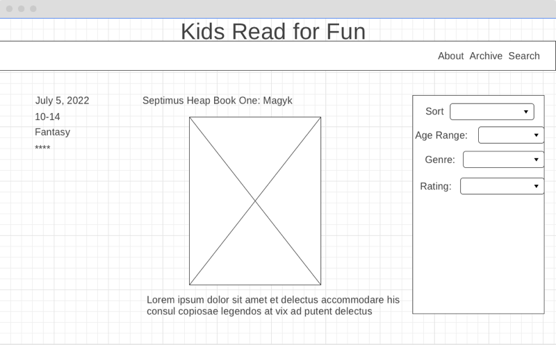
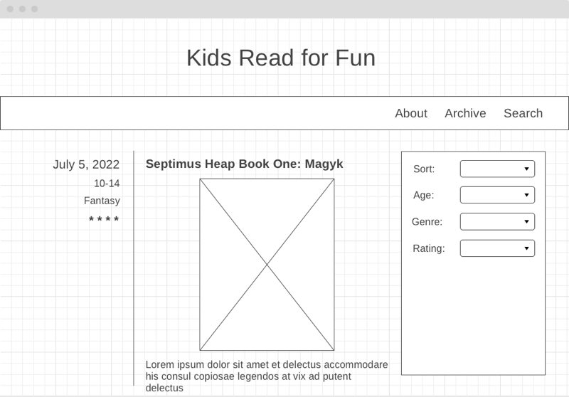

Design Basics - Design a book review site.
Preparation #
Make sure you read through the lesson Applying the Principles of Design.
For this exercise we will apply design principles by designing a webpage for a Book review site.
Activity 1 #
The imaginary client we are designing this website from is a mother with children ages 10 and 12. The children are avid readers and the family continually struggles to find good books fast enough to keep the youth reading.
Imagine this statement from the client:
My children love to read and move through books quickly. There are a lot of young adult books out there but I know that I would not approve of all of them for my children. My husband and I have been able to read or review books before turning out children loose on them up until now, but the kids are reading faster now than we can review. I wish there was a good site that would discuss books giving information about plot, characters, age appropriateness, and overall quality that I could trust. Such a site would remove some of the burden of choosing new books for our children.
As I have been unable to find this site I have decided to create it myself. The plan is for the whole family to contribute reviews, so some will have an adult perspective and some a youth perspective.
Review the list of action items from the Applying the Principles of Design lesson before proceeding.
- From the statement above, how would you define the purpose of this site? Who would be the audience?
- What will our audience come to the site hoping to accomplish?
- What content will we need on the site for our audience to accomplish their goals? What other features might our site need?
- Write down your answers to these questions, then compare yours with the solution below.
Solution 1
- Purpose: Create a site with detailed reviews of young adult books that parents and youth can use to find new reading material.
- Audience: Primarily parents of children ages 10-16, also children 10-16. But also anyone who likes to read.
- Parents and youth will come to the site to find new books to read. Their purposes will likely be slightly different however. Parents will primarily be concerned with if the book is appropriate for their child. This could involve questions about reading level and/or content. Youth will probably be more interested in whether the book sounds interesting and is well written. The site needs to accomodate both groups.
Activity 2 #
Now that we know what the purpose and needs of the site are, we can take those and start making a wireframe. Keep in mind the list of features compiled above, as well as principles such as scannability, hierarchy, and making it easy for the users to accomplish their goals. Also keep in mind the following:
- Sometimes users will know the book they are interested. How will the design make it easy to find a specific book?
- Sometimes the user will have a specific genre they are interested in. How can they find books in that genre?
- Sometimes users will want to see all books that are appropriate for a specific age (for example: good for 10-12, good for 10 and above, good for 12-16. etc)
- Sometimes a user will be concerned about an overall rating for the book...how can they quickly find the top rated books?
- First time users will probably want to know a little about the site and it's purpose.
- Regular visitors to the site will be interested in the newest reviews.
Create your wireframe, then compare it with the one in the solution. Notice differences and similarities. Your wireframe does not have to look like the one below. The provided solution is one approach to this design.
Solution 2

Activity 3 #
If you look at the wireframe in solution 2, you will notice that all of the content we needed is there, but there was little thought given to design principles. Apply the design principles from the Visual appeal portion of the prepare section to the wireframe.
You can use the wireframe above as your starting point, or you can use the wireframe you came up with. The same improvements can be applied to both.
- Start with proximity. Where should we either bring items closer together or spread them apart to fix our relationship issues?
- Move to alignment next. On the example above the alignment is all over the place. Start with the form. Notice that there are no clear lines in that space. How can that be fixed?
- Next look at your whitespace? Are there any portions of the site that could use some breathing room? Add it.
- Next specifically address hierarchy and scannability. What information on the page do we need to make stand out? You can use contrast to make the important bits stand out. Contrast can be created easily with size, color or by changing fonts.
- While thinking about the last point consider accessibility as well. Are your link names and headlines meaningful?
- After making all the improvements that you can think of, review the example below in solution 3. Compare the one below with the wireframe from activity 2. Can you see where the design principles were applied? Compare it also to your version of the wireframe. What further improvements could you make to yours? Did you make changes that were not represented below? Great!
Solution 3
